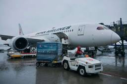
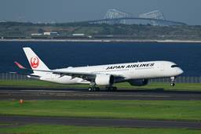
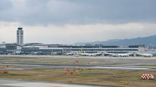
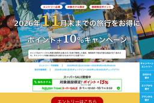
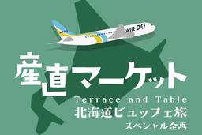
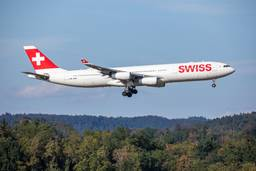
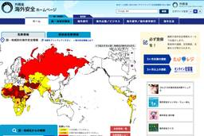
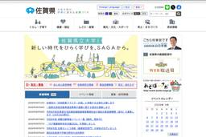

TRAICY（トライシー）
https://www.traicy.com/
TRAICY（トライシー）は、航空・LCC・鉄道・ホテル・ゲストハウス・バックパッカーズの最新情報を発信している、日本最大級のトラベルメディアです。
フィード
ナインアワーズ、ホテルリブランドファンドを組成 蒲田で12月開業予定
TRAICY（トライシー）
ナインアワーズは、昭和リースとビジネスホテルリブランドファンド「合同会社ナインアワーズバリューアッドファンド1」を8月に組成した。 国内主要都市や観光需要を見込む地域の既存ビジネスホテルを投資対象とし、取得後はナインアワ […]投稿 ナインアワーズ、ホテルリブランドファンドを組成 蒲田で12月開業予定 は TRAICY（トライシー） に最初に表示されました。
32分前
成田空港T2にオリオンビールのポップアップストア、9月11日オープン 空港初出店
TRAICY（トライシー）
成田国際空港第2ターミナルに、「ORION BEER LIMITED POPUP STORE in Narita Airport」が9月11日にオープンした。 空港初出店となる。オリオンビールの定番ロゴTシャツをはじめ、 […]投稿 成田空港T2にオリオンビールのポップアップストア、9月11日オープン 空港初出店 は TRAICY（トライシー） に最初に表示されました。
2時間前
苗場プリンスホテル4号館、12月11日リニューアルオープン 和と北欧をコンセプトに客室一新
TRAICY（トライシー）
苗場プリンスホテルは、4号館を12月11日にリニューアルオープンする。 リニューアルでは、和風と北欧風を組み合わせた「ジャパンディ」をコンセプトに、ファミリーツインA・B、ツインA・Bの4タイプ全280室を改装する。自然 […]投稿 苗場プリンスホテル4号館、12月11日リニューアルオープン 和と北欧をコンセプトに客室一新 は TRAICY（トライシー） に最初に表示されました。
3時間前

JAL、ノルウェー産「サバヌーヴォー」を今年も空輸 国際線機内食などで提供
TRAICY（トライシー）
日本航空（JAL）とJALUX、ノルウェー大使館水産部は、「サバヌーヴォー」を9月11日に空輸した。 2021年に初輸入し、今年で6年目となる。ノルウェー産サバのうち、脂肪率約30％、重量500グラム以上の個体を選別し、 […]投稿 JAL、ノルウェー産「サバヌーヴォー」を今年も空輸 国際線機内食などで提供 は TRAICY（トライシー） に最初に表示されました。
11時間前
ヒルトン、ロンドンに「タペストリーコレクション」初進出 2028年初頭に開業
TRAICY（トライシー）
ヒルトンは、Gama Holdingsとのフランチャイズ契約により、「London Bridge Hotel, Tapestry Collection by Hilton」の契約を締結した。 客室数は153室で、独自の「 […]投稿 ヒルトン、ロンドンに「タペストリーコレクション」初進出 2028年初頭に開業 は TRAICY（トライシー） に最初に表示されました。
14時間前
ヤフートラベル、「超得セール！ホテル・リゾートスペシャル」を開催中 9月19日まで
TRAICY（トライシー）
LINEヤフーは、旅行予約サイト「Yahoo!トラベル（ヤフートラベル）」で、「超得セール！ホテル・リゾートスペシャル」を9月9日正午から19日正午まで開催している。 注目の特別プランがお得となる。割引・ポイント付与が適 […]投稿 ヤフートラベル、「超得セール！ホテル・リゾートスペシャル」を開催中 9月19日まで は TRAICY（トライシー） に最初に表示されました。
15時間前
鹿児島県、「かごしま観光応援割」を9月14日から実施 政府の旅行支援と別に展開、県内宿泊を最大60％割引
TRAICY（トライシー）
鹿児島県は、「かごしま観光応援割」を実施する。 熊本地震の影響による宿泊キャンセルを受け、政府による旅行支援「九州ふっこう応援割」とは別の、鹿児島県独自のキャンペーンとして実施する。県内での宿泊を伴う旅行の宿泊代金を最大 […]投稿 鹿児島県、「かごしま観光応援割」を9月14日から実施 政府の旅行支援と別に展開、県内宿泊を最大60％割引 は TRAICY（トライシー） に最初に表示されました。
16時間前
マリオット、2泊以上の滞在で最大4,500ポイント プロモーション実施
TRAICY（トライシー）
マリオット・インターナショナルは、Mariiott Bonvoy（マリオット・ボンヴォイ）のグローバルプロモーションを実施する。 2泊以上の滞在で、1滞在あたり1,500ポイントを付与する。世界各地のリゾートでは、3,0 […]投稿 マリオット、2泊以上の滞在で最大4,500ポイント プロモーション実施 は TRAICY（トライシー） に最初に表示されました。
17時間前

JAL、東京ディズニーシー貸切パーティー招待キャンペーンを実施 9月13日まで
TRAICY（トライシー）
日本航空（JAL）は、「東京ディズニーシー完全貸切パーティーへご招待！キャンペーン」を9月7日から13日まで実施している。 東京ディズニーシーを通常営業後に貸し切って開催する。同社の公式Xアカウントをフォローし、「#JA […]投稿 JAL、東京ディズニーシー貸切パーティー招待キャンペーンを実施 9月13日まで は TRAICY（トライシー） に最初に表示されました。
17時間前

福岡国際空港とソフトバンクホークス、相互連携協定 空港で歓迎装飾やパブリックビューイング
TRAICY（トライシー）
福岡国際空港と福岡ソフトバンクホークスは、福岡の魅力発信、観光振興、双方の価値向上を目的とした相互連携協定を締結した。 連携する項目は、福岡の魅力発信、福岡空港における歓迎演出や情報発信、スポーツを通じた地域活性化と賑わ […]投稿 福岡国際空港とソフトバンクホークス、相互連携協定 空港で歓迎装飾やパブリックビューイング は TRAICY（トライシー） に最初に表示されました。
17時間前
JAL、ホノルル・ハワイ離島行きで特別運賃 往復12万円台から
TRAICY（トライシー）
日本航空（JAL）は、ホノルル・ハワイ離島行きを対象とした特別運賃を、9月1日から10月31日まで販売する。 対象路線は日本各地〜ホノルル・コナ・リフエ・ラナイ・カフルイ・モロカイ・カパルア・ヒロ線で、エコノミークラス往 […]投稿 JAL、ホノルル・ハワイ離島行きで特別運賃 往復12万円台から は TRAICY（トライシー） に最初に表示されました。
18時間前

楽天トラベル、海外ホテルの予約でポイント10％追加還元 11月までの宿泊対象
TRAICY（トライシー）
楽天グループは、旅行予約サイト「楽天トラベル」で「海外旅行ポイント＋10％キャンペーン」を9月1日午前10時から24日午前9時59分まで開催している。 期間内にエントリーを行い、海外の対象ホテルで宿泊利用した場合が対象で […]投稿 楽天トラベル、海外ホテルの予約でポイント10％追加還元 11月までの宿泊対象 は TRAICY（トライシー） に最初に表示されました。
19時間前
ラディソン、ChatGPTでホテル検索が可能に アクセンチュアと開発
TRAICY（トライシー）
ラディソン・ホテル・グループは、アクセンチュアとの協業により、ChatGPT上で利用できるホテル検索アプリの提供を開始した。 ChatGPTで「@RadissonHotels」を有効にすることで、利用できる「アムステルダ […]投稿 ラディソン、ChatGPTでホテル検索が可能に アクセンチュアと開発 は TRAICY（トライシー） に最初に表示されました。
21時間前
アシアナ航空、宮崎〜ソウル/仁川線を増便 12月18日から1日1往復
TRAICY（トライシー）
アシアナ航空は、宮崎〜ソウル/仁川線を12月18日から増便する。 現在は水・金・日曜の週3往復を運航しており、これを1日1往復へ増やす。機材はエアバスA321neoを使用する。所要時間は宮崎発、ソウル/仁川発ともに1時間 […]投稿 アシアナ航空、宮崎〜ソウル/仁川線を増便 12月18日から1日1往復 は TRAICY（トライシー） に最初に表示されました。
21時間前
エア・インディアとIHG、マイレージ提携 宿泊でマハラジャポイント付与
TRAICY（トライシー）
エア・インディアとIHGホテルズ＆リゾーツは、マイレージ提携を開始した。 エア・インディアのマハラジャクラブ会員は、世界のIHGホテルズ＆リゾーツでの宿泊でマハラジャポイントを獲得できる。大半の施設では1米ドルにつき2ポ […]投稿 エア・インディアとIHG、マイレージ提携 宿泊でマハラジャポイント付与 は TRAICY（トライシー） に最初に表示されました。
1日前
JAL、国際線「EXPRESS MEAL」刷新 すき焼割烹日山の「黒毛和牛すき焼御膳」が復活
TRAICY（トライシー）
日本航空（JAL）は、国際線ビジネスクラスの「EXPRESS MEAL（エクスプレスミール）」で、すき焼割烹日山の「黒毛和牛すき焼御膳」を9月1日から2027年2月28日まで提供する。 すき焼割烹日山は、大正元年に創業し […]投稿 JAL、国際線「EXPRESS MEAL」刷新 すき焼割烹日山の「黒毛和牛すき焼御膳」が復活 は TRAICY（トライシー） に最初に表示されました。
1日前
コアグローバルマネジメント、会員制度「CORE MEMBERS」開始 入会費・年会費無料
TRAICY（トライシー）
コアグローバルマネジメントは、入会費・年会費無料の会員制度「CORE MEMBERS」を9月1日に開始した。 会員ランクはブロンズ、シルバー、ゴールド、プラチナの4段階を設定し、利用実績に応じてステータスが上がる。特典は […]投稿 コアグローバルマネジメント、会員制度「CORE MEMBERS」開始 入会費・年会費無料 は TRAICY（トライシー） に最初に表示されました。
1日前

ホテルメトロポリタン 川崎、「道産空輸 AIRDOダイレクト便」を活用したイベント 9月16日・17日
TRAICY（トライシー）
ホテルメトロポリタン 川崎は、AIRDO（エア・ドゥ）との共同企画として「AIRDO北海道産直マーケットin川崎駅」を9月16日と17日の2日間限定で、JR川崎駅中央南改札内で開催する。 「道産空輸 AIRDOダイレクト […]投稿 ホテルメトロポリタン 川崎、「道産空輸 AIRDOダイレクト便」を活用したイベント 9月16日・17日 は TRAICY（トライシー） に最初に表示されました。
1日前
厦門航空、厦門〜ロンドン/ヒースロー線を新規就航 9月6日から週3往復
TRAICY（トライシー）
厦門航空は、厦門〜ロンドン/ヒースロー線を9月6日に新規就航した。 水・金・日曜の週3往復を運航する。機材はボーイング787型機を使用する。所要時間は厦門発が12時間45分、ロンドン/ヒースロー発が11時間25分。 福建 […]投稿 厦門航空、厦門〜ロンドン/ヒースロー線を新規就航 9月6日から週3往復 は TRAICY（トライシー） に最初に表示されました。
1日前
ホテルニューオータニ、栗とぶどうのスイーツフェアを開催 11月30日まで
TRAICY（トライシー）
ホテルニューオータニの直営3ホテル（東京・幕張・大阪）は、「栗とぶどうスイーツフェア」を9月1日から11月30日まで実施する。 スーパーモンブラン（3,780円、テイクアウト）は最も食べ頃を迎える品種の和栗を使用して仕上 […]投稿 ホテルニューオータニ、栗とぶどうのスイーツフェアを開催 11月30日まで は TRAICY（トライシー） に最初に表示されました。
1日前

スイス、エアバスA340-300型機をスイス交通博物館に寄贈へ 2028年初頭の搬入目指す
TRAICY（トライシー）
スイス・インターナショナル・エアラインズは、保有する最後のエアバスA340-300型機を、退役後にルツェルンのスイス交通博物館に常設展示する計画を進めている。 エアバスA340-300型機は長年にわたり長距離路線を支えて […]投稿 スイス、エアバスA340-300型機をスイス交通博物館に寄贈へ 2028年初頭の搬入目指す は TRAICY（トライシー） に最初に表示されました。
2日前
ヤフートラベル、「JAL限定クーポン」を配布 最大3万円割引
TRAICY（トライシー）
LINEヤフーは、旅行予約サイト「Yahoo!トラベル（ヤフートラベル）」で、「JAL限定クーポン」の配布を9月11日から20日まで実施する。 日本航空（JAL）の航空券とホテルのセットプラン「ヤフーパック」が対象で、利 […]投稿 ヤフートラベル、「JAL限定クーポン」を配布 最大3万円割引 は TRAICY（トライシー） に最初に表示されました。
2日前

外務省、エジプト・南シナイ県の危険レベルを引き下げ
TRAICY（トライシー）
外務省は、エジプトの危険情報を更新し、南シナイ県の一部地域の危険レベルを引き下げた。 南シナイ県のうち、レベル1（十分注意）を継続するダハブからシャルム・エル・シェイクまでのアカバ湾沿岸地域を除く同県全域を、レベル3（渡 […]投稿 外務省、エジプト・南シナイ県の危険レベルを引き下げ は TRAICY（トライシー） に最初に表示されました。
2日前
プラット・アンド・ホイットニー、ポーランドの製造拠点に2,500万米ドルを投資
TRAICY（トライシー）
プラット・アンド・ホイットニーは、ポーランド・ニェポウォミツェの製造拠点を拡張するため、2,500万米ドルを投資する。2028年の稼働開始を予定し、120人以上の雇用を創出する。 同拠点は商用・軍用エンジン向けの複雑な管 […]投稿 プラット・アンド・ホイットニー、ポーランドの製造拠点に2,500万米ドルを投資 は TRAICY（トライシー） に最初に表示されました。
2日前
JAL、「JAL SKY MUSEUM」で新コース「JAL航空気象アカデミー」を開設 9月28日から
TRAICY（トライシー）
日本航空（JAL）は、「JAL SKY MUSEUM」で新コース「JAL航空気象アカデミー」を、9月28日に開設する。 元JAL客室乗務員で気象予報士の真壁京子氏とのコラボレーションによるもので、毎週月曜に設定する。ゲリ […]投稿 JAL、「JAL SKY MUSEUM」で新コース「JAL航空気象アカデミー」を開設 9月28日から は TRAICY（トライシー） に最初に表示されました。
2日前
中国、日本国籍者に対する査証料金を大幅引き上げ 一次査証は16,750円 1
1
TRAICY（トライシー）
中国駐日本国大使館・総領事館は、日本国籍者に対する査証料金を大幅に引き上げる。 相互主義に基づく対応として、9月14日申請分から適用する。第三国国民の査証は従前の料金が適用となる。当初は12月31日まで、一般査証の基本料 […]投稿 中国、日本国籍者に対する査証料金を大幅引き上げ 一次査証は16,750円 は TRAICY（トライシー） に最初に表示されました。
2日前

チェジュ航空、広島〜済州線でチャーター便 シルバーウィークに1往復
TRAICY（トライシー）
チェジュ航空は、広島〜済州線でシルバーウィークにチャーター便を運航する。 広島発が9月20日、済州発が9月23日の1往復を運航する。機材はボーイング737-800型機もしくはボーイング737-8型機を使用する。 ツアー商 […]投稿 チェジュ航空、広島〜済州線でチャーター便 シルバーウィークに1往復 は TRAICY（トライシー） に最初に表示されました。
2日前

佐賀県、「九州ふっこう応援割」を9月24日以降販売開始
TRAICY（トライシー）
佐賀県は、政府による旅行支援「九州ふっこう応援割」による「九州ふっこう応援割さがキャンペーン」の販売を、9月24日から順次開始する。 九州ふっこう応援割は、九州地方における1泊以上の旅行・宿泊商品が対象で、旅行・宿泊料金 […]投稿 佐賀県、「九州ふっこう応援割」を9月24日以降販売開始 は TRAICY（トライシー） に最初に表示されました。
2日前
WILLER EXPRESS、荒天時の「条件付き運行」便でキャンセル料を免除 運休確定前でも
TRAICY（トライシー）
WILLER EXPRESSは、台風や大雪などの荒天が見込まれる際、条件付き運行便でも無料キャンセルができる取り組みを正式に開始した。 今年1月から導入しているもので、予約システム「WiLL」上で、天候や道路状況などを踏 […]投稿 WILLER EXPRESS、荒天時の「条件付き運行」便でキャンセル料を免除 運休確定前でも は TRAICY（トライシー） に最初に表示されました。
2日前
大韓航空、スターリンクを9月15日から導入 機内Wi-Fiを無料提供 1
TRAICY（トライシー）
大韓航空は、スペースXが提供する低軌道衛星通信サービス「スターリンク」による機内Wi-Fiサービスの提供を、9月15日から開始する。 エアバスA350-900型機、ボーイング777-300ER型機などの大型機材から導入し […]投稿 大韓航空、スターリンクを9月15日から導入 機内Wi-Fiを無料提供 は TRAICY（トライシー） に最初に表示されました。
2日前